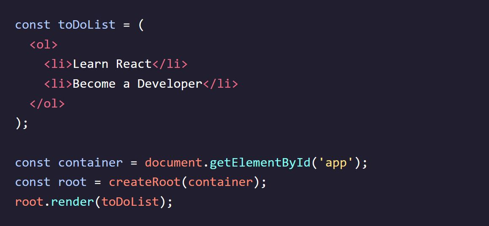
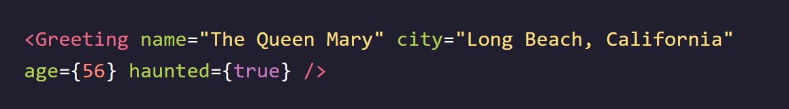
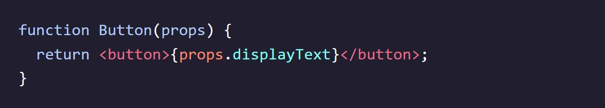

Codecademy - Learn React: Introduction
Notes taken while going through the Codecademy Learn React: Introduction course
Intro to JSX
Why React
- React is known for its speed and responsiveness, allowing apps to handle complex updates efficiently.
- React promotes modularity by breaking down code into smaller, reusable components, improving maintainability.
- It excels in scalability, making it suitable for large programs that involve frequent data changes.
- React is flexible and can be used for various projects beyond web app development, opening up opportunities for exploration.
- React's popularity in the industry makes learning and understanding it valuable, enhancing employability prospects.
What is JSX?
- JSX is a syntax extension for JavaScript used with React.
- JSX code resembles HTML and is written within JavaScript files.
- JSX is not valid JavaScript, so it needs to be compiled before it can be understood by web browsers.
- A JSX compiler translates JSX code into regular JavaScript.
- The compilation process ensures that the JavaScript file containing JSX is compatible with web browsers.

JSX Elements
- A JSX element is the basic unit of JSX syntax.
- JSX elements resemble HTML syntax.
- JSX elements are typically written within JavaScript files.
- JSX elements can be similar to their HTML counterparts but are found within JavaScript files instead of HTML files.

JSX Elements & their Surroundings
- JSX elements are treated as JavaScript expressions and can be used anywhere JavaScript expressions are allowed.
- JSX elements can be saved in variables:
- JSX elements can be stored in objects or arrays:
- JSX elements offer flexibility and can be manipulated and used like any other JavaScript expression.


Attributes in JSX
- JSX elements can have attributes similar to HTML elements.
- JSX attributes follow an HTML-like syntax: name="value" format.
- Attribute values are typically wrapped in quotes.
- A single JSX element can have many attributes, just like in HTML:


Nested JSX
- JSX elements can be nested inside other JSX elements, similar to HTML.
- For better readability, you can use line breaks and indentation, similar to HTML:
- If a JSX expression spans multiple lines, it should be wrapped in parentheses.
- Nested JSX expressions can be assigned to variables or passed to functions like non-nested JSX expressions:


JSX Outer Elements
- A JSX expression must have exactly one outermost element.
- The opening tag of the JSX expression and the closing tag must belong to the same JSX element.
- The following would work fine:
- But this would not work and would throw errors:
- If you encounter an error due to multiple outer elements, the solution is to wrap the JSX expression in a
element or any other suitable parent element.
Rendering JSX Explained
- Rendering in React involves specifying what content to render and where to place that content.
- The render() method is used to render JSX expressions.
- To determine where to place the content, the first line uses the getElementById() method of the document object to get the HTML element with the specified ID ('app' in this case) and stores it in the container variable.
- The createRoot() function from the react-dom/client library is used to create a React root from the container, and the resulting root is stored in the root variable. This establishes the target location for rendering the content.
- Finally, the render() method of the root object is called, passing in the JSX expression (
Hello world
) as the content to be rendered. This triggers the rendering process, displaying the specified content in the designated location.


Passing a Variable to render()
- The render() method in React can accept a variable as its argument, as long as the variable evaluates to a JSX expression. 
- In the example, a JSX expression representing a to-do list is saved in the toDoList variable.
- The createRoot() function is used to create a React root from the container element.
- The render() method of the root object is called, and the toDoList variable is passed as the argument. The JSX expression stored in toDoList will be evaluated and rendered in the designated location.
- The Virtual DOM
- When using the render() method in React, it only updates the DOM elements that have changed.
- If the exact same JSX expression is rendered twice in a row, the second render will not make any changes to the DOM.
- React achieves this efficient update process by utilizing the concept of the Virtual DOM.
- The Virtual DOM is a lightweight representation of the actual DOM.
- When changes are made to the React components, React compares the Virtual DOM with the previous version to identify the specific elements that need to be updated.
- Only the necessary changes are then applied to the real DOM, resulting in better performance and efficiency.
- The use of the Virtual DOM is one of the key factors contributing to React's success in efficiently updating and rendering UI components.

Review: Intro to JSX
- React is a modular, scalable, flexible, and popular front-end framework.
- JSX is a syntax extension for JavaScript which allows us to treat HTML as expressions.
- They can be stored in variables, objects, arrays, and more!
- JSX elements can have attributes and be nested within each other, just like in HTML.
- JSX must have exactly one outer element, and other elements can be nested inside.
- createRoot() from react-dom/client can be used to create a React root at the specified DOM element.
- A React root’s render() method can be used to render JSX on the screen.
- A React root’s render() method only updates DOM elements that have changed using the virtual DOM.
React: The Virtual DOM
The Virtual DOM Explained
- DOM manipulation, the process of updating the web page's structure, is slower compared to other JavaScript operations.
- Many JavaScript frameworks tend to update the DOM more than necessary, resulting in inefficiencies.
- React addresses this issue with the concept of the Virtual DOM.
- In React, there is a corresponding "virtual DOM object" for every real DOM object. The virtual DOM object is a lightweight copy of the real DOM object.
- The virtual DOM object has the same properties as the real DOM object but lacks the power to directly change what's displayed on the screen.
- When a JSX element is rendered, every virtual DOM object is updated.
- Updating the virtual DOM is much faster because it doesn't involve drawing anything on the screen. It's like editing a blueprint instead of moving rooms in a house.
- After updating the virtual DOM, React compares it with a virtual DOM snapshot taken before the update. This process is called "diffing."
- By comparing the new virtual DOM with the pre-update version, React determines which virtual DOM objects have changed.
- React then updates only the changed objects on the real DOM, rather than rebuilding the entire DOM. This selective updating is efficient.
- React's ability to update only the necessary parts of the DOM contributes to its reputation for performance and efficiency.
Advanced JSX
class vs className
- In HTML, the attribute name for defining the CSS class of an element is "class".
- However, in JSX, you cannot use the attribute name "class" because it is a reserved word in JavaScript.
- Instead, you need to use "className" as the attribute name in JSX.
- JSX is translated into JavaScript, and using "className" ensures compatibility and avoids conflicts with the reserved word "class".
- When the JSX is rendered, the "className" attributes are automatically translated and rendered as "class" attributes in the resulting HTML.
Self-Closing Tags
- In HTML, some elements like
and can be written with or without a closing slash before the final angle bracket. - However, in JSX, it is mandatory to include the closing slash in self-closing tags. Forgetting to include the slash will result in an error.
- Remember to always use the closing slash in self-closing tags in JSX to ensure proper syntax and avoid errors.

Curly Braces in JSX
- When you write code in between the tags of a JSX element, it is treated as JSX, not regular JavaScript.
- To indicate that you want a code snippet to be treated as regular JavaScript within JSX, you need to wrap it in curly braces {}.
- By using curly braces, you can execute JavaScript expressions and statements within JSX.
- Curly braces allow you to inject dynamic and executable JavaScript code within JSX elements.

Variables in JSX
- When you inject JavaScript into JSX, the JavaScript code has access to variables declared in the same environment.
- You can access variables while inside a JSX expression, even if those variables were declared outside the JSX code block.
- The value of the variable will be evaluated and inserted into the JSX during rendering.

Variable Attributes in JSX
- Variables can be used to set attributes in JSX by wrapping them in curly braces {}.
- Each attribute can be set on a separate line for better readability, especially when dealing with multiple attributes.
- Object properties can also be used to set attributes. You can access the desired property using dot notation or square brackets.
- By using variables and object properties, you can make your JSX code more dynamic and reusable, allowing for easy updates and customization.

Event Listeners in JSX
- JSX elements can have event listeners, similar to HTML elements.
- Event listeners in JSX are created by using a special attribute on the JSX element.
- The event listener attribute's name should follow the pattern of "on" + event type, such as onClick or onMouseOver.
- The value of an event listener attribute should be a function.
- The function clickAlert should be defined elsewhere in the code.
- In JSX, event listener names are written in camelCase, such as onClick or onMouseOver.
- In HTML, event listener names are written in all lowercase, such as onclick or onmouseover.


JSX Conditionals: If Statements that do Work
- In JSX, you cannot directly inject an if statement.
- One way to express conditionals in JSX is to write the if statement outside of the JSX code.
- The if statement can be used to conditionally determine which JSX code to render.
- By placing the if statement on the outside, there is no need for JavaScript injection within JSX tags.
- This approach is a common way to handle conditionals in JSX.
JSX Conditionals: The Ternary Operator
- The ternary operator, written as x ? y : z, is a compact way to write conditionals in JSX.
- It works the same way in React as it does in regular JavaScript.
- The ternary operator is commonly used in JSX expressions.
- Inside the curly braces of a JSX expression, you can use the ternary operator to conditionally render different content.
- The expression before the question mark (?) is evaluated and determines whether it is truthy or falsy.
- If the expression is truthy, the value before the colon (:) is returned. Otherwise, the value after the colon is returned.
- The ternary operator is often used to conditionally render different JSX elements or to assign different values to variables based on a condition.
- In the provided example, the ternary operator is used to conditionally set the value of the headline variable based on the comparison between age and drinkingAge.

JSX Conditionals: &&
- The && operator is another way to write conditionals in JSX, commonly used for rendering content conditionally.
- It works similarly to the logical AND operator in JavaScript.
- If the expression on the left of the && is true, the JSX on the right of the && will be rendered.
- If the expression on the left is false, the JSX on the right will be ignored and not rendered.
- The && operator is useful for conditionals that should sometimes perform an action and other times do nothing at all.
- It can help simplify conditional rendering by avoiding the need for additional if statements or ternary operators.
- In the provided example, the && operator is used to conditionally render different list items based on the values of baby and age.
- The list item containing "Pizza" will be rendered if baby is false.
- The list items containing "Brussels Sprouts", "Oysters", and "Grappa" will be rendered based on the different age conditions.
- Only the list items corresponding to true expressions will be included in the final JSX output.
.map in JSX
- The .map() method is commonly used in React to create a list of JSX elements efficiently.
- When you have an array and want to transform each element into JSX, you can use .map() to iterate over the array and return a new array of JSX elements.
- In the provided example, the array strings contains a list of strings.
- By calling .map() on strings, we create a new array listItems where each string is transformed into an
- element.
- The arrow function is used as the transformation function in the .map() call. It takes each string as input and returns the corresponding JSX
- element.
- The {listItems} expression is used to include the array of JSX elements in the JSX code. It will be evaluated to the array of
- elements.
- JSX elements don't have to be in an explicit array. You can directly include them as individual elements.
- Alternatively, you can store the JSX elements in an array, like liArray, and include the array using curly braces, like {liArray}.


Keys
- Keys are JSX attributes used to uniquely identify elements in a list.
- Keys are necessary when you have a list where the items need to maintain their memory or when the order of the list might be shuffled between renders.
- Keys are not used for any visible effects in the rendered output. They are used internally by React to optimize list rendering and ensure correct item ordering.
- If you omit keys when they are required, React may mistakenly reorder the list items or cause other issues.
- If your list items don't have memory or the list order is static, you may not need to use keys. However, it's generally recommended to use keys if you're unsure or if your list might have dynamic changes.
- Using unique and stable values as keys, such as IDs or unique identifiers from data, is recommended to ensure consistent behavior and performance in React.
- In the example above, we're using the .map() method in order to help us create unique keys


React.createElement
- JSX is a popular syntax extension for writing React code, but it is possible to write React code without JSX.
- JSX elements are compiled into calls to React.createElement().
- The React.createElement() method takes three arguments: the element type, the element's properties (or "props"), and the element's children.
- The first argument of React.createElement() is the type of the element, in this case, the string "h1".
- The second argument is an object representing the element's properties or attributes. Since no properties are specified in the example (null is passed), it is equivalent to providing an empty object {} in JSX.
- The third argument is the children of the element, in this case, the string "Hello world".
- React.createElement() returns a React element that can be rendered in a React component.

React Components
Components
- React applications are built using components.
- A component is a small, reusable piece of code that has a specific responsibility.
- Components are responsible for rendering HTML and updating it when data changes.
- Components can be created using the React library, which is imported at the beginning of the code: import React from 'react';
- The React library provides the necessary functions and utilities for creating and working with components in React applications.
Import React
- To use React and its features in your code, you need to import it first.
- The import statement import React from 'react'; imports the React library and assigns it to an object named React.
- This import statement should be placed at the beginning of your code file before using any React-related features.
- The 'react' string in the import statement refers to the name of the package/module that contains the React library.
- Make sure you have the 'react' package installed as a dependency in your project for the import to work correctly.
- Importing React allows you to access and use various features and functionalities provided by the React library, such as creating and working with components, using hooks, and more.
- It's important to import React in every file where you want to use React components or features.
Import ReactDOM
- In addition to importing React, we also need to import ReactDOM to interact with the DOM.
- The import statement import ReactDOM from 'react-dom'; imports the ReactDOM library and assigns it to an object named ReactDOM.
- The 'react-dom' string in the import statement refers to the name of the package/module that contains the ReactDOM library.
- ReactDOM provides methods that specifically deal with interacting with the DOM, such as rendering React components into the browser's DOM.
- Methods imported from 'react' are focused on React-specific functionality and are not directly related to manipulating the DOM.
- While React allows us to create and manage components, ReactDOM provides the means to render those components into the actual DOM elements of a web page.
- Make sure you have the 'react-dom' package installed as a dependency in your project for the import to work correctly.
- Importing ReactDOM is necessary if you want to render React components into the DOM and interact with the browser's DOM elements.
Create a Function Component
- React components are small, reusable chunks of code responsible for rendering HTML and updating it when data changes.
- Components are like building blocks that make up a React application, representing different parts of the interface.
- Function components are a way to define React components using JavaScript functions.
- Function components have become the standard in modern React applications, replacing class components with the introduction of Hooks.
- Function components can be defined by creating a JavaScript function with a name that represents the component.
- Inside the function, a return statement is used to return a React element in JSX syntax, which represents the HTML to be rendered.
- The example code shows the definition of a function component named MyComponent that returns an < h1> element with a specific message.
- The import React from 'react'; statement is used to import the necessary React library.
- The function component is exported using export default so it can be used elsewhere in the application.
Name a Functional Component
- When declaring a new functional component, it should be given a name.
- The name of a functional component should start with a capital letter and follow the convention of PascalCase.
- Starting the name with capitalization distinguishes it as a React component rather than an HTML tag.
- This capitalization rule is specific to React and is important to ensure that the component is interpreted correctly by React.
Functional Component Instructions
- In app.js:
- Importing React from 'react' creates a JavaScript object containing necessary properties for React.
- Defining a JavaScript function creates a function component, which acts as a factory for producing instances of itself.
- The function component needs a name written in Pascal case, such as UpperCamelCase.
- The body of the function component, enclosed in curly braces, contains instructions for building a React component. It can be seen as JSX code.
- The JSX code inside the return statement of the function component acts as the instructions for building a React component.
- Remember, the function component is responsible for rendering HTML and defining the structure and behavior of the React component it represents.
- In index.js:
- Importing ReactDOM from 'react-dom/client' creates a JavaScript object with methods for interacting with the DOM, such as ReactDOM.createRoot().
The Return Keyword in Functional Components
- Functional components in React are similar to regular JavaScript functions and act as factories that assemble portions of the user interface based on provided instructions.
- The instructions for a functional component are defined within the function body, delimited by curly braces.
- The instructions can include a combination of markup (JSX), CSS, and JavaScript to produce the desired result.
- It is essential to include a return statement in the function body, as the function is expected to return a JSX element that can be rendered onto the browser screen.
- The returned JSX element represents the output of the functional component and determines what will be displayed.
- Remember, defining a functional component and providing the necessary instructions is only the first step. To actually render the component onto the browser screen, it needs to be used or referenced in another part of the application.
Importing & Exporting React Components
- In a React application, the top-level file is usually named App.js, and the entry point is index.js.
- Components can be defined in separate files for organization and reusability.
- To make a component available for use in other files, it needs to be exported.
- Exporting a component is done by using the export default syntax followed by the component name.
- In the file where the component will be used (e.g., index.js), it can be imported using the import statement and specifying the file path.
- Once imported, the component can be used and rendered in the desired location within the file.
- By exporting and importing components, we can create a modular structure in our React application and easily reuse components across different files.
Using & Rendering a Component
- To use a function component, we can treat it like an HTML tag and include it in our JSX code.
- The self-closing tag syntax
can be used to include the component. - If needed, components can be nested within opening and closing tags, like
- To render our component to the browser, we need to use the methods from the react-dom library in the entry point file (e.g., index.js).
- First, we call ReactDOM.createRoot() and pass it a DOM element where the component will be rendered.
- The createRoot() method creates a root container for the DOM element and returns a reference to the root.
- Finally, we call the .render() method on the root container and pass the component as JSX syntax to display it in the DOM.
- React will take over managing the DOM inside the specified root element, and any updates to the UI will be handled efficiently by React.
- By using createRoot() and render(), we can set up the initial rendering of our component in the specified DOM element and allow React to manage the UI updates from that point onwards.
Review: React Components
- React applications are made up of components.
- Components are responsible for rendering pieces of the user interface.
- To create components and render them, react and reactDOM must be imported.
- React components can be defined with Javascript functions to make function components.
- Function component names must start with a capitalized letter, and Pascal case is the adopted naming convention.
- Function components must return some React elements in JSX syntax.
- React components can be exported and imported from file to file.
- A React component can be used by calling the component name in an HTML-like self-closing tag syntax.
- Rendering a React component requires using .createRoot() to specify a root container and calling the .render() method on it.
Components & Advanced JSX
Use Multiline JSX in a Component
- When working with multi-line JSX expressions, it is recommended to wrap them in parentheses.
- This is important to ensure the proper interpretation of the JSX syntax and maintain clarity in the code.
- In the given example, the QuoteMaker component returns a multi-line JSX expression representing the HTML structure of a quote.
- The entire JSX expression is wrapped in parentheses to indicate that it is a single expression.
- The use of parentheses helps in maintaining readability and avoiding any potential syntax errors when dealing with multi-line JSX.
Use a Variable Attribute in a Component
- To render a React component with an image and its properties, we can use a JavaScript object to store the image information.
- Use JSX syntax to render the image using the img element.
- Inject JavaScript code inside curly braces to set attribute values dynamically.
- Use the object's properties to set the image source, alt text, and width.
- JavaScript injections inside the return statement enable dynamic rendering in JSX.
Putting Logic in a Function Component
- Function components can include logic and calculations.
- By placing the calculations before the return statement, you can perform operations and store the result in variables.
- These calculations can involve any JavaScript code, such as mathematical operations, conditionals, or function calls.
- The calculated value can then be used within the JSX element by injecting the variable using curly braces.
- It is important to ensure that the logic and calculations are placed before the return statement in the function component.
- Placing logic within the return statement directly, without proper syntax, will result in a syntax error.

Event Listener & Event Handlers in a Component
- Function components can include event handlers to respond to interactions with the interface, such as clicking or hovering.
- Event handlers are functions that define the logic for what should happen when an event occurs.
- Event handlers are defined inside the function component and typically start with the word "handle" followed by the type of event they are handling.
- Event handlers are passed as props to JSX elements.
- When passing an event handler, do not include the parentheses after the function name. This ensures that the function is called only when the event occurs, rather than immediately.

Review: Components & Advanced JSX
- Function components can return multiple JSX lines by nesting the elements in a parent element.
- Variable attributes can be used inside of a React component with JavaScript injections.
- React components support logic by putting the logic statements above the return statements.
- Components can conditionally return JSX elements by putting conditional statements inside of the components.
- Components can respond to events by defining event handlers and passing them to the JSX elements.
Components Render Other Components
Returning Another Component
- Components in React can interact with each other by passing information or returning other components.
- A component can return another component as part of its JSX structure.
- By returning another component, you can compose your UI by combining multiple components together.
- In the example provided, the ItemBox component returns an instance of the PurchaseButton component, allowing them to be rendered together.
Apply a Component in a Render Function
- Components can be applied in a render function by importing them into the file.
- In the top-level file (e.g., App.js), import the desired component using the appropriate path.
- Inside the render function (e.g., App component), use the imported component as a JSX element.
- The imported component can be considered a child component of the parent component.
- Breaking a component into smaller extracted components allows for reusability and the construction of more complex components.
Review: Components Render Other Components
- A React application can contain multiple components.
- Components can interact with each other by returning instances of each other.
- Components interacting allows them to be broken into smaller components, stored into separate files, and reused when necessary.
Props
Props
- Components in React can communicate with each other by passing information through props.
- Props allow customization of the output of a component based on the information that is passed in.
- Props provide a way to pass data from a parent component to a child component.
- By using props, components can become more flexible and dynamic in their behavior.
- Props enable components to be reusable and adaptable in different contexts.
Access a Components Props
- Every component in React has a props object that holds information about that component.
- Props allow us to pass information from a parent component to a child component.
- Props serve a similar purpose as arguments in functions.
- To access a component's props, we can use dot notation and reference the specific property we want to access.
- We can use props to customize the behavior and output of components based on the information passed to them.
Pass 'props' to a Component
- To pass information (props) to a React component, you give the component an attribute.
- The attribute name represents the name of the prop you want to pass, and the attribute value represents the value of that prop.
- Props can hold any type of information, including strings, numbers, booleans, and even arrays or objects.
- If you want to pass a non-string value as a prop, you need to wrap it in curly braces. 
Render a Components Props
- To access the props object inside a function component, define the component with props as the parameter. 
- The props object contains the information passed to the component.
- You can access the values of props using dot notation (props.propertyName).
- Alternatively, you can use destructuring syntax to extract specific props values directly in the function signature. For example, function Button({displayText}) extracts the displayText prop from the props object.
- Inside the component's return statement, you can use the props values to render the desired output.
Pass Props from Component to Component
- Props in React are passed from parent components to child components.
- The parent component defines the props and passes them to the child component.
- Props are immutable, meaning they cannot be changed by the child component.
- If a component needs new values for its props, it should rely on the parent component to pass new props.
- Props travel in a one-way direction, from the top (parent) component to the bottom (child) component.
Render Different UI Based on Props
- Props can be used to make decisions and render different UI based on the values they hold.
- Instead of directly displaying the prop value, you can use it to conditionally render different components or content.
- By using conditional statements like if and else, you can check the prop values and return different JSX elements based on the conditions.
- This allows you to customize the rendering of a component based on the values passed through props.
- The prop values themselves are not displayed, but they are used to determine the output.
Put an Event Handler in a Function Component
- Event handlers in React are defined as methods on the function component.
- To define an event handler, you create a function within the function component.
- In the example, the event handler method is defined as handleEvent().
- The event handler is attached to an event, such as a click event, using the onClick attribute.
- In this case, the event handler handleEvent is attached to the onClick event.
- When the element is clicked, the event handler function will be called.
- Inside the event handler, you can define the desired behavior or action to be performed, such as displaying an alert message.
- Event handlers allow you to respond to user interactions and perform actions based on those interactions.
handleEvent, onEvent, and props.onEvent
- When defining an event handler, you need to choose two names: the name of the event handler function itself and the name of the prop used to pass the event handler.
- The event handler function's name follows a naming convention based on the type of event you are listening for. For example, if you are listening for a "click" event, you can name your event handler function as handleClick. If you are listening for a "hover" event, you can name it as handleHover.
- The prop name that is used to pass the event handler follows the pattern of "on" plus the event type. For example, if you are listening for a "click" event, the prop name can be onClick. If you are listening for a "hover" event, the prop name can be onHover.
- By following this naming convention, it becomes easier to understand the purpose and functionality of the event handler and the prop.
- Using consistent naming conventions improves code readability and makes it easier to understand the flow of data and interactions between components.
props.children
- The props.children property returns everything that is passed between the opening and closing tags of a component.
- It allows components to have dynamic content and makes them flexible and reusable.
- When a component has no children, props.children will be undefined.
- If a component has a single child, props.children will return that child without being wrapped in an array.
- If a component has multiple children, props.children will return an array containing all the children.
- This allows components to handle different content and structures based on what is passed to them as children.
- The value of props.children can be text, other components, or a combination of both.
- By utilizing props.children, components can be composed and structured in a more flexible and customizable way.
Giving Default Values to Props
- When working with React components, you may encounter situations where a prop is not passed, and you want to provide a default value for it.
- There are three ways to specify default values for props:
- Using the defaultProps static property: Define a defaultProps property on the component and assign an object with the prop name and its default value.
- Specifying the default value in the function definition using destructuring: Include the prop with a default value in the function parameter.
- Setting the default value within the function body: Destructure the prop and assign a default value using the assignment operator.
- If no value is passed for the prop, the default value will be used.
- If a value is passed for the prop, it will override the default value and be displayed instead.